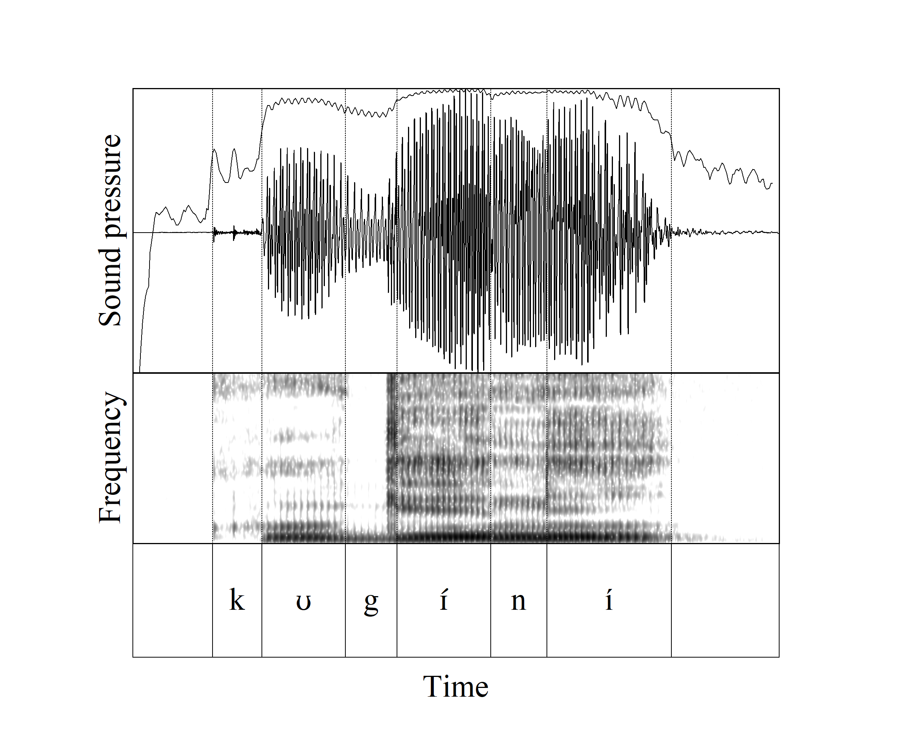
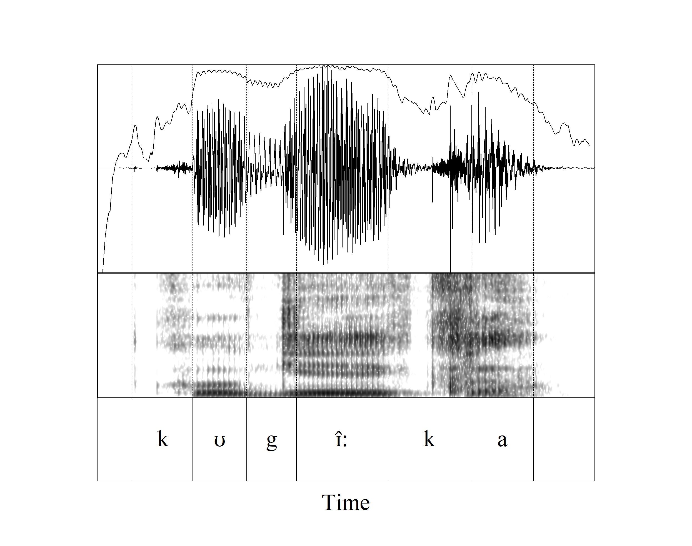
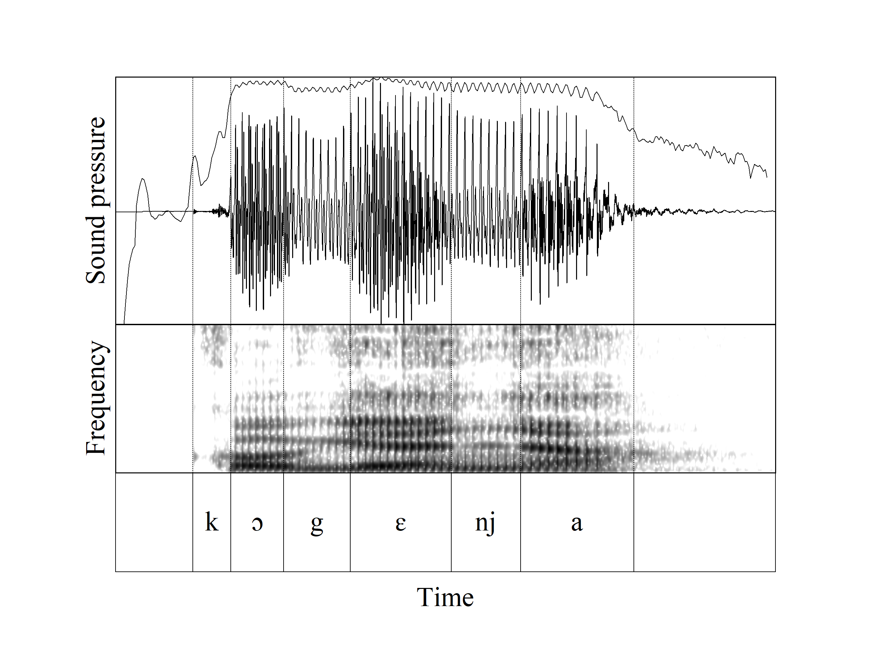
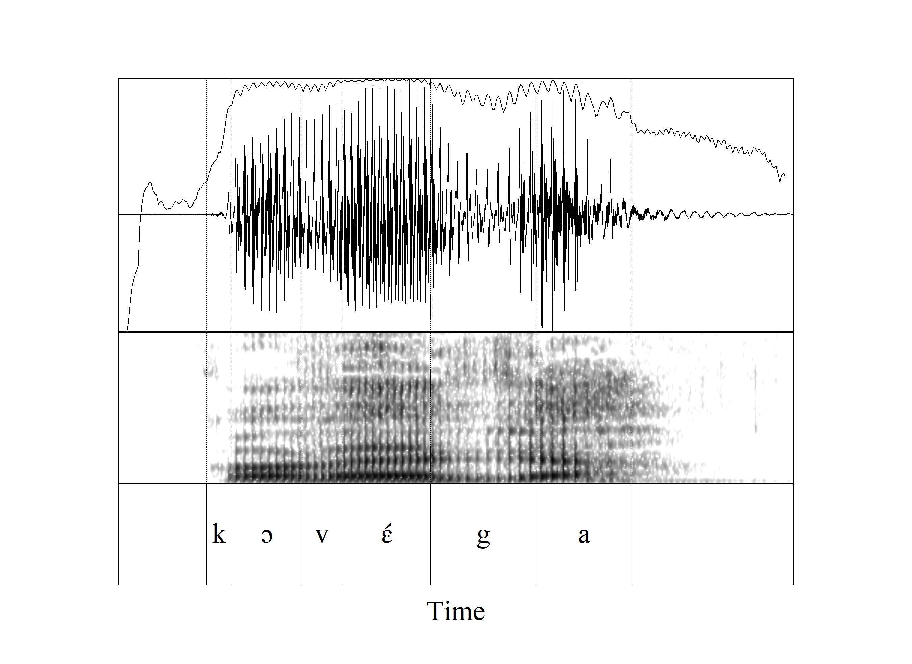
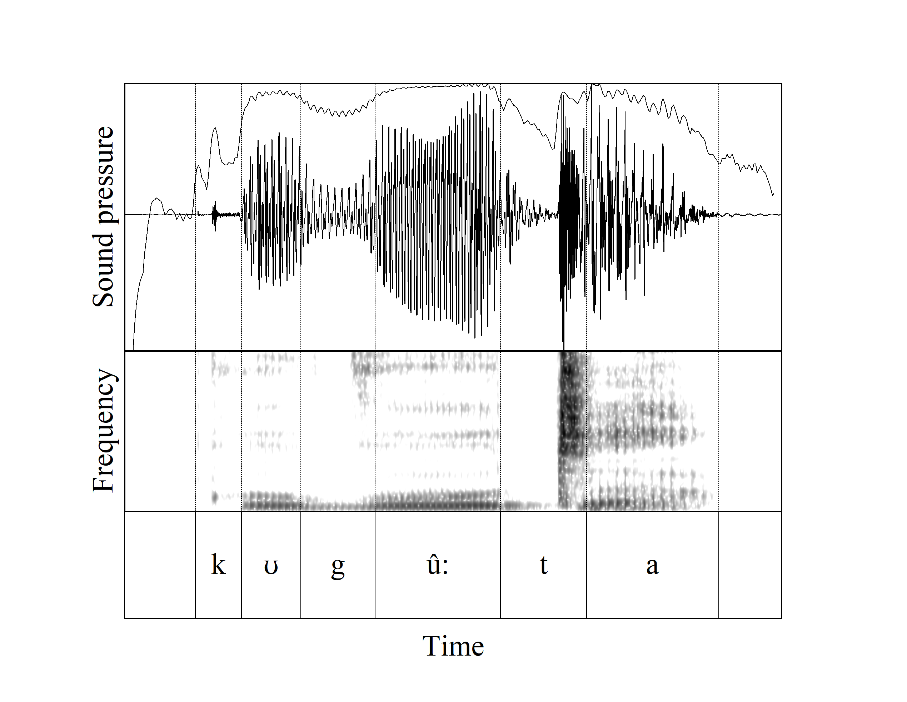
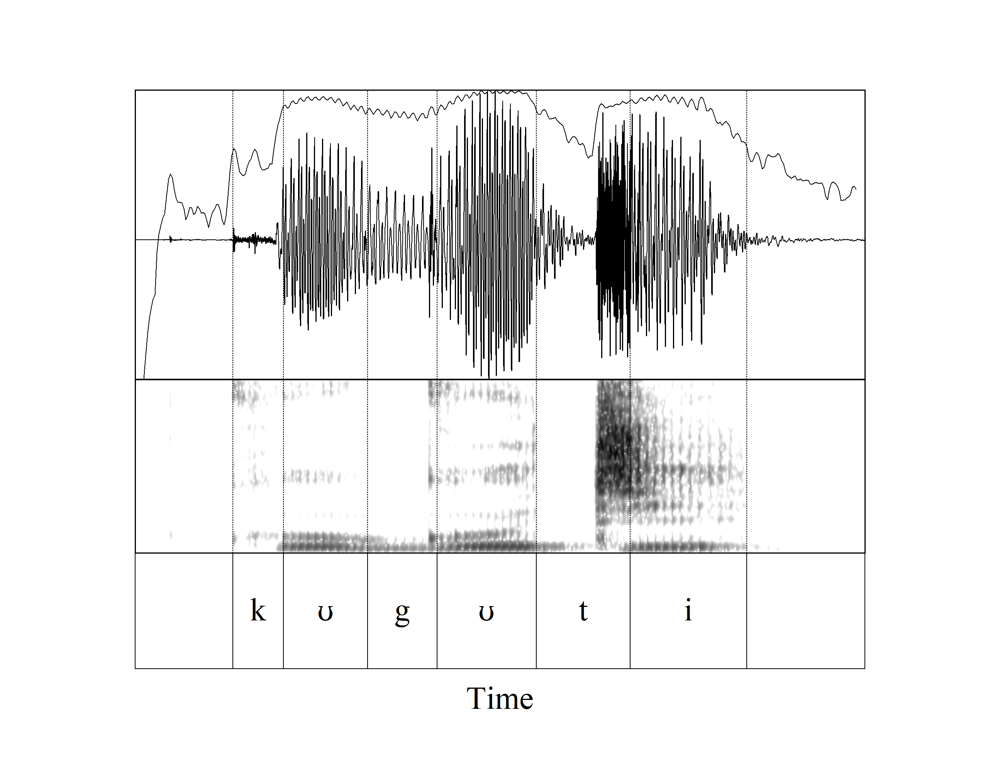

What kind of constriction do we have in "g"?
Rapid and strong decrease in amplitude, prominent release burst. It sounds like [g]
| [kʊgɪ́ní] | we slandered |  |
| [kʊgɪ̂:ka] | to exaggerate |  |
Slow and weak decrease in amplitude, no burst. It sounds like the fricative [γ].
| [kɔgɛnja] | to be amazed |  |
| [kɔvɛ́ga] | to shave |  |
Mixed signals: halfway between the first two and the second 2 above
| [kʊgû:ta] | to win |  |
| [kʊgʊti] | we stacked |  |